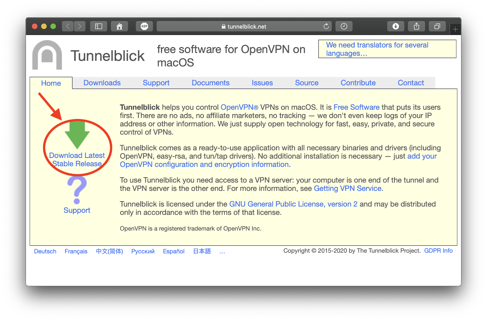
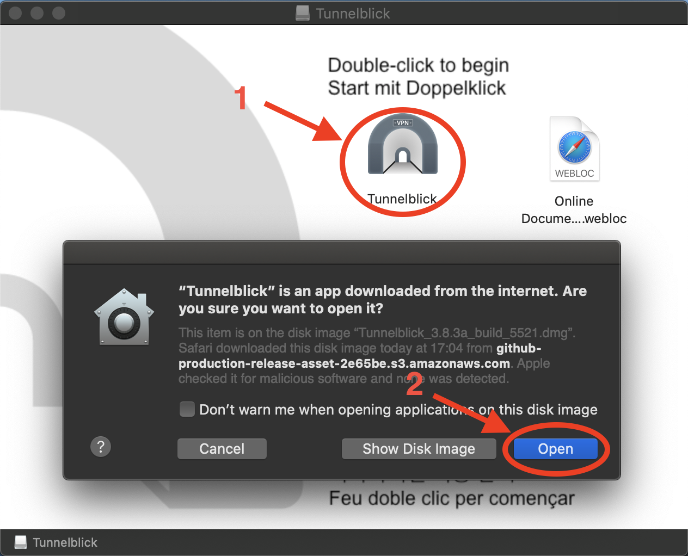
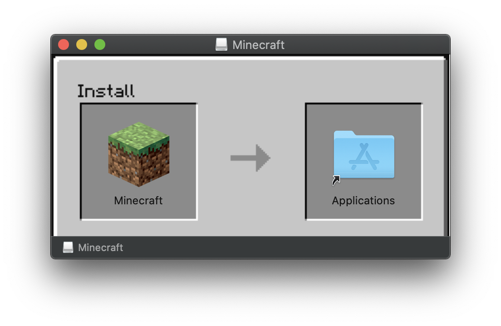
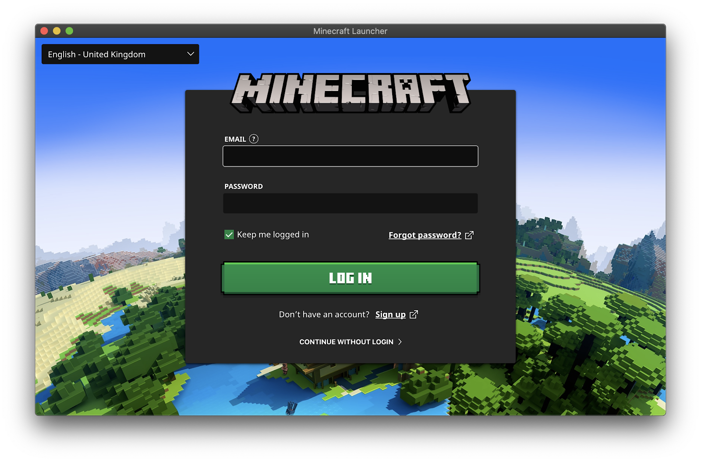
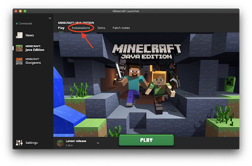
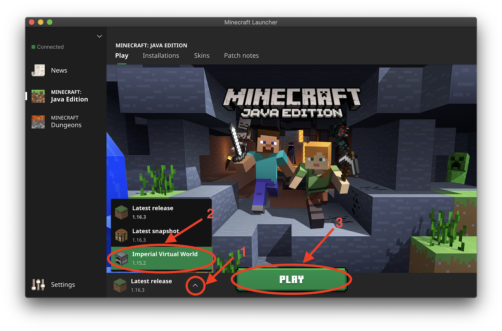
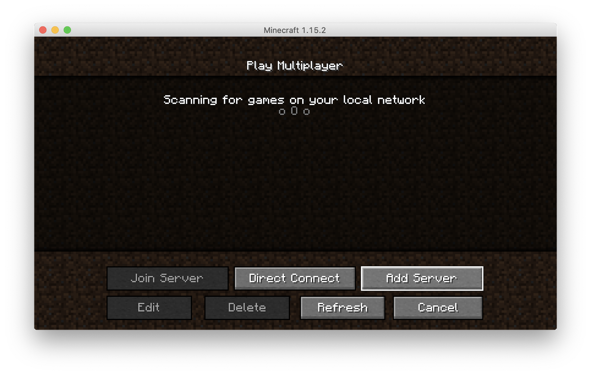
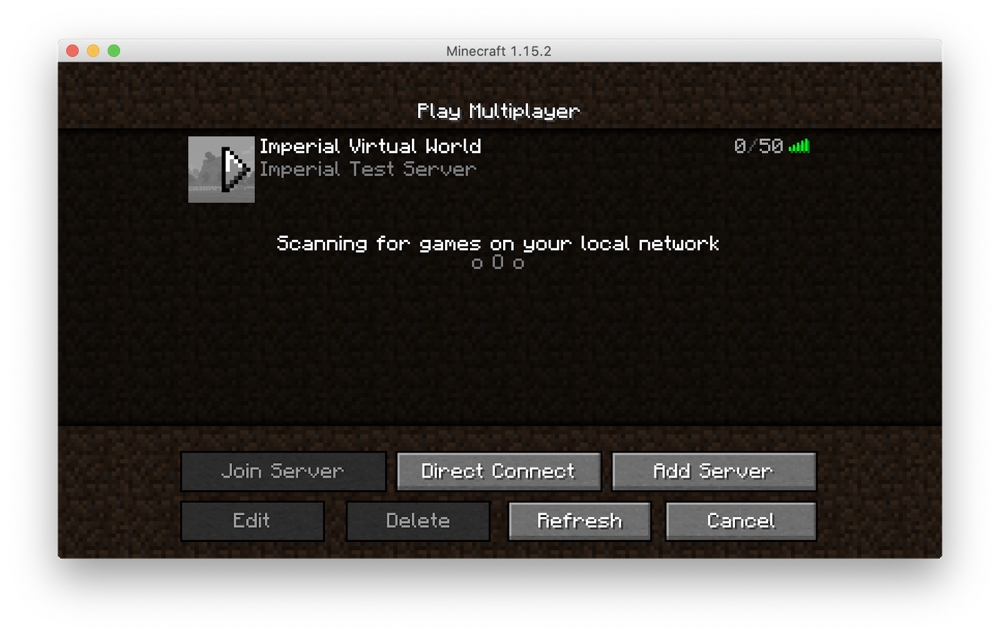

To join Virtual Imperial you will need to:
Imperial VPN
To connect to the Minecraft server and the Mumble server you need to be on the Imperial network. So if you are not on Imperial's Campus, make sure you are connected to the Imperial VPN! More information about Imperial VPN can be found HERE
-
Download the Tunnelblick VPN client from https://tunnelblick.net and download the Latest Stable Release.
 -
Open the DMG installer of Tunnelblick, double click on the app icon and allow it to be opened.
 -
You will be asked if you already have configuration files. Click on “I have configuration files”. Then click on "OK".
-
You should now see the Tunnelblick icon in the MacOS menu bar. Click it and select “VPN Details...”.
-
Drag the Imperial VPN configuration file downloaded in Step 1 in the left panel of the Tunnelblick windows that was opened after Step 4.
-
When prompted, select “Only Me” and insert your user password. You can then close the Tunnelblick window.
-
From the MacOS menu bar, click on the Tunnelblick icon and click on “Connect ic”.
-
You will be asked your Imperial College username and password. You can save them in Keychain if you wish. Input them and press “OK".
-
If the configuration is successful, you should see the following prompt in the top right corner of your screen. The VPN configuration is complete.
-
To reconnect to the VPN at a later time after the initial configuration, just open Tunnelblick form the launchpad, click the icon in the menu bar and select “Connect ic”.
Minecraft Installation
-
Download the Mac Minecraft installer from https://www.minecraft.net/en-us/download/ by clicking on the “DOWNLOAD FOR MACOS” button.
-
Open the Minecraft.dmg file that you just downloaded and drag the Minecraft app to your applications folder.
 -
From your launchpad, open Minecraft. You will be prompted with the following message, please click on “Open”.
-
You will be asked to input your Minecraft account details. After doing so, click on “LOGIN”.

Minecraft Set-up
Joining The World (Without Voice chat)
It is important to follow these steps to join the server since the server is run on an older version of Minecraft (1.15.2). Starting the game without selecting the correct version of Minecraft will prohibit you from joining the server.
You will only have to follow these steps once, when you first join!
-
Open the Minecraft launcher but do not press play. You will see the following window. In the top menu, click the “Installations” button.
 -
Create a installation by clicking "New".

-
Give the new installation a name (for example “Imperial Virtual World”), and from the version drop-down menu select “release 1.15.2”. Leave everything else unchanged and press “Create”.

-
You should now see your new installation in the list. Press the “Play” button in the top menu to return to the main screen.

-
Select the installation that you just created from the drop-up menu and click “Play”. Minecraft will open. Make sure that before you enter the game you are connected to the Imperial VPN as instructed in the steps above.
 -
Select "Multiplayer" then select "Add Server".
 -
Input a server name of your choice and the IP address and port of the world that you wish to join (for now 146.169.42.75:25565). Press “Done”.
-
Double-click on the server that you just added. You will now enter the Imperial College Virtual World, enjoy!
